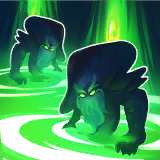
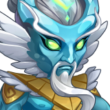
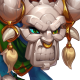

FIRST SKILL • PERFECT COPY
Perfect Copy
Mushy summons an inactive Shroom with missing Health.
The copy inherits Mushy's stats from the beginning of battle and can receive attacks, offensive spells and healing.
Once fully healed for the first time, the Shroom becomes active, attacking enemies and using Mushy's learned skills.
However, an activated Shroom cannot regenerate Energy.
Mushy can summon up to five Shrooms, and the skill scales with Health.
Why it matters
Activated Shrooms can continue fighting even after the original Mushy dies. This makes the summoned army a particularly dangerous part of the hero's strategy.
Healing support can accelerate the activation of inactive Shrooms. Byrna
Byrna
Activated Shrooms can continue fighting even after the original Mushy dies. This makes the summoned army a particularly dangerous part of the hero's strategy.
Healing support can accelerate the activation of inactive Shrooms.
Byrna
Alvanor
Mojo Aidan
Aidan